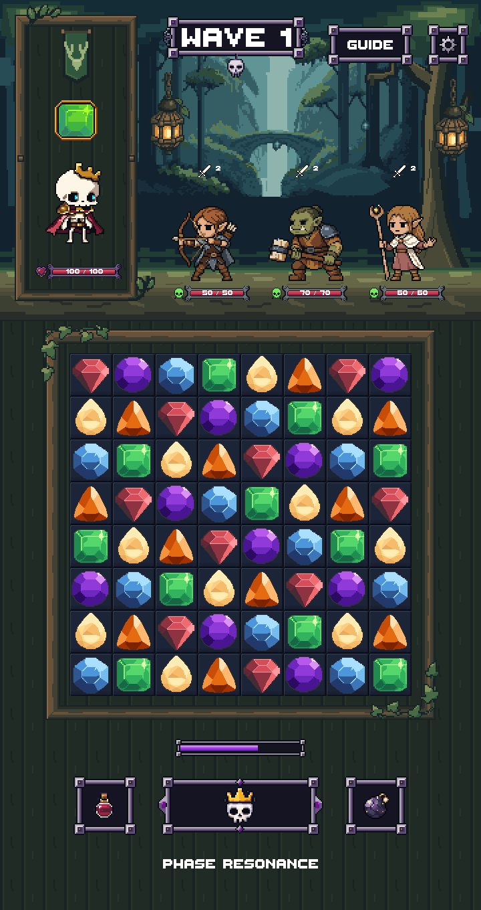
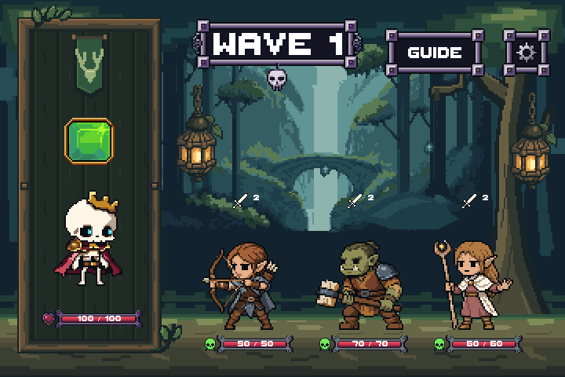
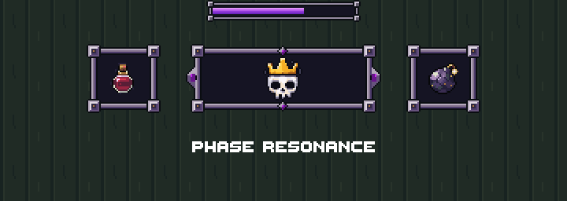

Checkpoint 5. Approved artwork assembled in Unity, with Rattlebones, three existing Forest enemy samples and original 64x64 gems. Art-only review; combat is not running. Lower HUD unchanged. No new artwork, generation spending or production integration.

Open full 2x Unity capture | Approved board assets | Approved portrait assets


Unity compilation and preview test passed. Exact 2x rendering; unchanged top, board and lower HUD; no mask spill, clipped independent sprites or camera gaps. Notes | Verification report. Checkpoint 6 awaits approval. Nothing merged.